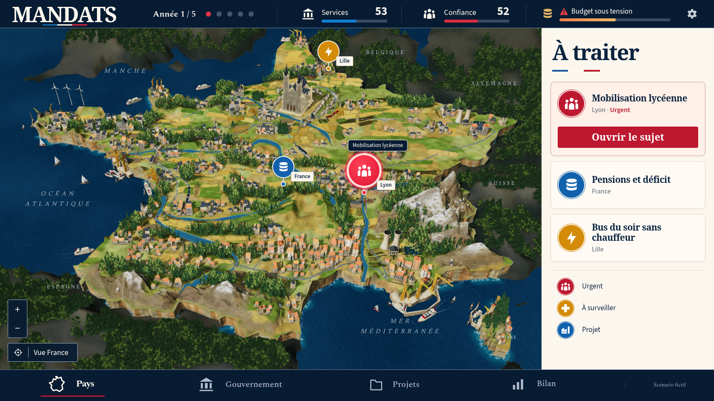
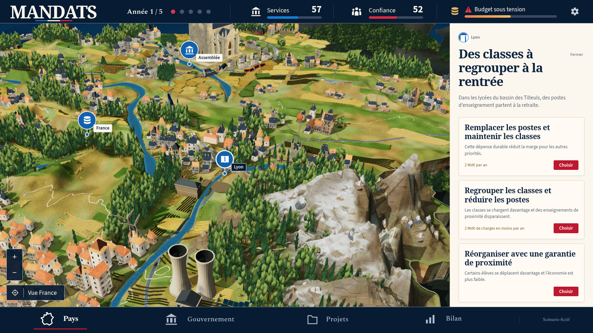
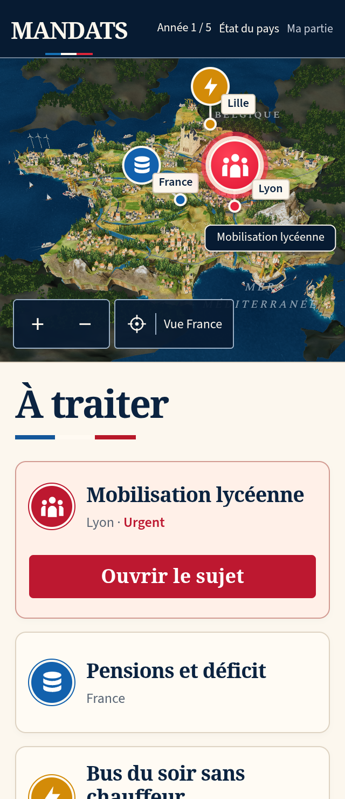
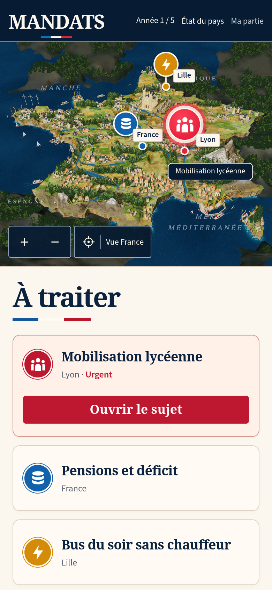

MANDATS — comparaison 41
Fidélité visuelle encore insuffisante. La reconstruction continue. Le passage des contrôles techniques ne constitue pas une validation artistique.
La référence montre un scénario fictif. La capture du jeu conserve ses véritables valeurs : année 1, services 53, confiance 52, après une décision de regroupement des classes. Les sujets de Nantes et de Lille sont ceux de cette partie ; aucune donnée n’a été injectée pour copier le scénario de l’image.


Référence canonique.Production 41 : véritable mobilisation lycéenne à Lyon.
| Partie | Corrections vérifiées | Travail restant |
|---|
| Alpes | Les fractures partagent leurs hauteurs aux bords des triangles. La variation intérieure respecte le gradient de chaque plan parent ; des fissures fines suivent la neige. | Les grandes masses blanches restent trop uniformes et les facettes trop visibles par rapport à la référence. |
| Bâtiments et bois | 781 maisons après les protections des nouveaux ports. Couronnes distantes des feuillus plus détaillées, grain de feuillage, arbres de hauteurs variées dans leurs emprises horizontales conservées. | La variété architecturale et la finesse naturelle des bois restent insuffisantes. |
| Ports | Cherbourg et Dunkerque ont des quais propres aux bourgs déjà présents. Sept ports, 33 bateaux et aucune collision entre bateaux de ports différents sur les polygones contrôlés. | Affiner les silhouettes, la finition du rivage et la composition maritime. |
| Repères et agenda | Plus de projection SVG non finie au démarrage. Le titre réel « Mobilisation lycéenne » tient sur une ligne. Le libellé de Lyon se place à droite lorsque l’espace le permet. | Poursuivre la comparaison de toute la composition ; ces corrections ne valident pas l’ensemble de la maquette. |

Inspection obtenue avec « Voir le lieu », puis un clic sur « Réduire la carte » : le relief nécessite encore du travail.

Production à 320 × 740, Chromium DPR 2. Framebuffer de 640 × 562.
Production à 390 × 844, Chromium DPR 2. Framebuffer de 780 × 642. Ce sont des captures natives de production ; le contrôle original WebKit est conservé séparément.Contrôles de cette version
Le check complet passe ses 1 082 tests, ses trois cibles TypeScript, le build, le pré-rendu et la préparation hors connexion. Les deux tests DPR originaux passent sur ordinateur et WebKit, avec l’attente Babylon de 15 secondes inchangée. Le test original ciblé d’importation, export et reprise sur ordinateur passe aussi. Les suites complètes rework, social, header, mandats, board et story restent à contrôler sur la version finalement retenue.
Les sept captures natives contrôlent zéro erreur de page, de console, de requête et HTTP. L’inspection séparée trouve douze monuments et aucune intersection avec les canopées testées. Les 6 628 comparaisons des fondations donnent exactement les mêmes hauteurs que le calcul précédent. Ces périmètres précis ne prouvent pas l’absence de toute intersection dans la scène.
Le terrain et les arbres sont reproduits octet par octet. L’éclairage de 128 pixels conserve les coefficients diffus et les 48 mipmaps retenus du cube de 256 pixels, sans rééchantillonnage ; les six images les plus fines sont omises. Le décalage réel de mipmap est −0,2. Chromium emploie SwiftShader : aucune fréquence sur GPU physique n’est revendiquée.
La CI du commit précédent 46fc27f reste en échec sur une reprise DPR WebKit et un parcours d’importation ancien. Les trois contrôles locaux ciblés passent ici ; ils ne remplacent pas une CI complète de cette version. La fidélité artistique demeure en cours et la PR reste en brouillon.
Manifeste et empreintes · Relevés natifs · Deux tests DPR originaux · Test original d’importation · Inspection en lecture seule · Fondations conservées · Échecs CI précédents · Comparaison précédente